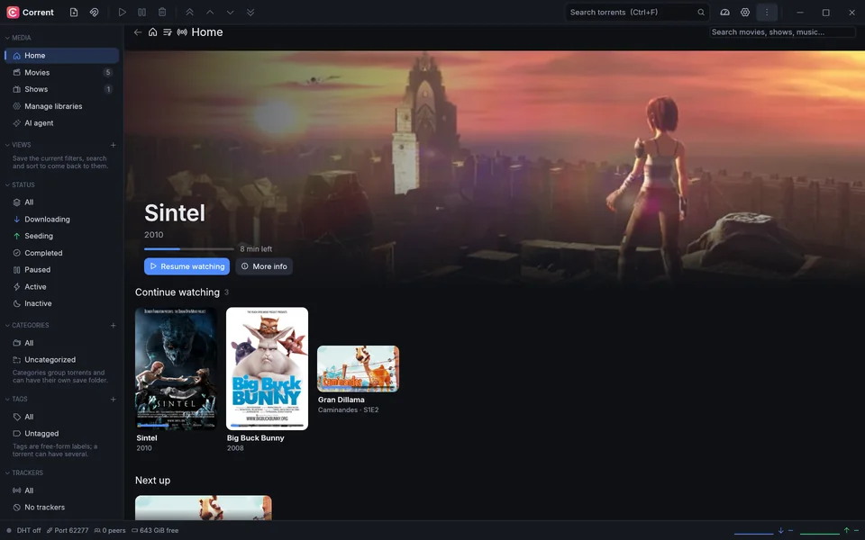
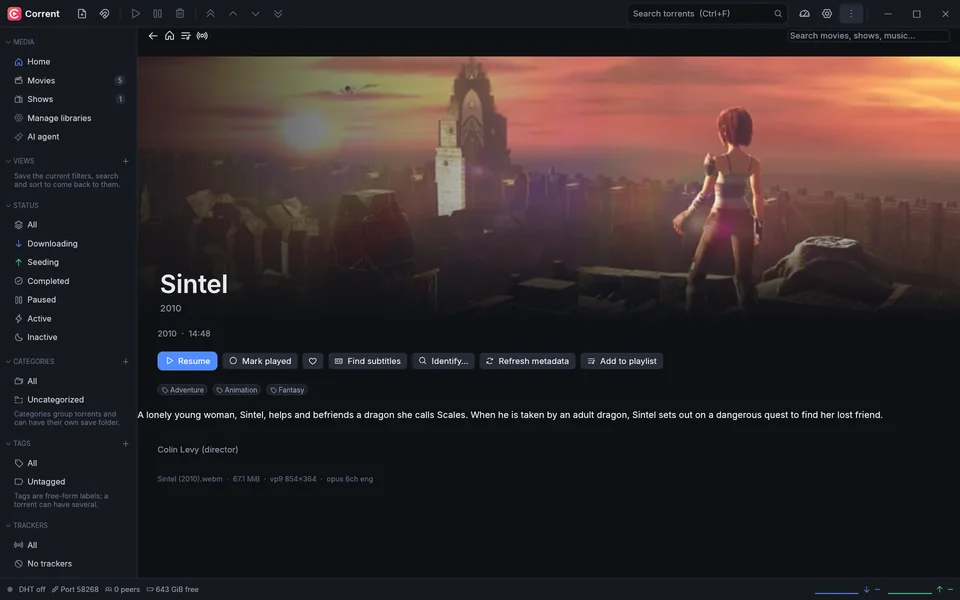
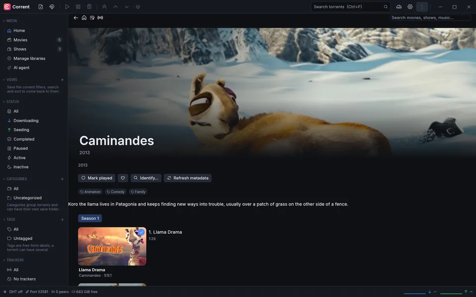
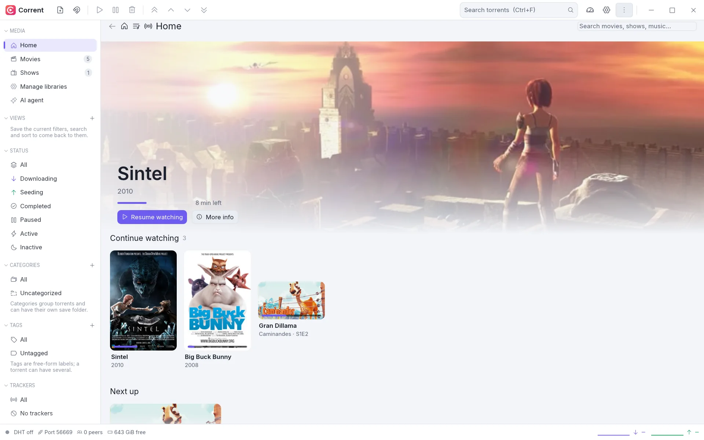
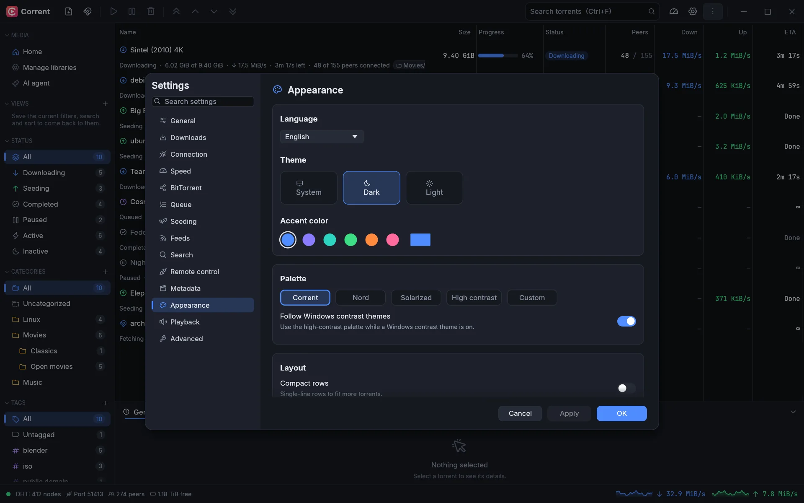
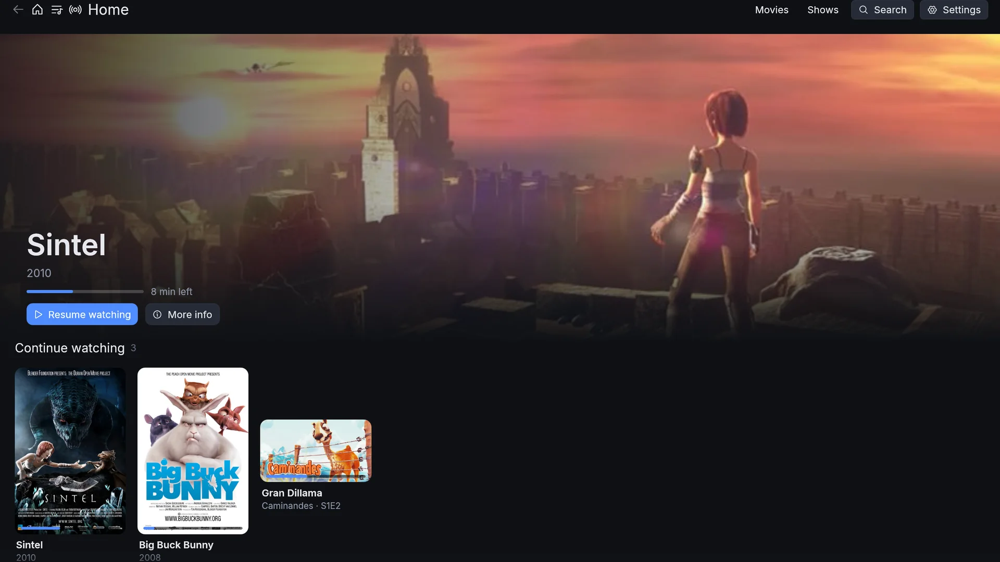

Free & open source · Written in Rust
Your media,
everywhere.
Corrent is your own media server and player, with a BitTorrent client built in. Your movies, shows and music on the desktop, in the browser, on the TV and on Chromecast, with no ads, no tracking and nothing to sign up for.
What Corrent stands for
-
Calm by design
One clean window. Clear states, readable numbers and motion that tells you what changed, never noise.
-
Stable to the core
The interface never waits on your disk or network. Your data is written safely, and it picks up where it left off.
-
Private by default
No accounts, no ads, no telemetry. Remote access is off until you turn it on, and then it needs a password.
-
Torrents built in
The download engine is part of the server. What finishes lands in your library, and you can watch while it downloads.
The tour
From the library
to the big picture.
-
Pick up where you left off
Home shows what you're in the middle of, what's next in a show and what's new in each library, with artwork and metadata for every item.

-
Everything about a film
Plot, genres, people, the file's tracks, and buttons for subtitles, playlists and finding the right metadata.

-
A real player
mpv inside the app: subtitles, audio tracks, chapters, an equalizer and night mode, casting and Watch together, all one click away.
-
Shows, season by season
Episodes in order with what you've already seen marked, so the next one is always a click away.

-
Downloads that land in the library
The torrent client is part of it. Finished downloads are imported into your libraries, and a video can play while it downloads.
Make it yours
Light or dark. Your colors.
Your language.
Five palettes, including Nord, Solarized and high contrast, six accents or your own, and a theme editor for the rest.


- Screen-reader support
- Keyboard all the way
- Follows your contrast theme
- English and Turkish
- Interface scaling
Watch anywhere
One library, every screen.
Run Corrent on your computer, or the headless server on a home server or NAS, and watch from wherever you are.
- Web client. Served by the server itself and installable as an app on phones, tablets and TV browsers.
- TV mode. A full-screen interface you drive with arrow keys, a remote or a gamepad.
- Plays everything. Direct play when the device can, a light repackage when only the container is wrong, and transcoding with NVENC or Quick Sync when it must.
- Cast and share. Send it to a Chromecast, or watch together in sync with a room code.
- Finds itself. The app spots your server on the network and pairs with a short code; Corrent Connect reaches it from outside without port forwarding.

The torrent client, built in
Set it up once. Let it fill your library.
A complete BitTorrent client is part of Corrent, and it works on its own too.
Feeds and rules
Follow RSS feeds and download what matches: words or patterns, episode ranges, one release per episode.
Search
Search the Torznab providers you add, such as Jackett or Prowlarr, without leaving the app.
Works with your tools
A qBittorrent-compatible API, so Sonarr, Radarr and friends can use Corrent as their download client.
Straight into the library
Finished downloads are imported into a library, with a wanted list and "Follow new episodes" for shows.
Queue and schedules
Limits for active torrents, seeding goals, and slower speeds on a weekly schedule.
AI-ready
An optional MCP bridge lets AI assistants check on and manage your downloads.
Built not to break
Quietly reliable.
A media server runs for months at a time and holds files you care about. Corrent is engineered and tested for exactly that.
- Never blocksThe window never waits on your disk or network. The engine runs on its own and the interface only reads snapshots of it.
- Fast resumeRestart and pick up where you left off. Nothing downloads twice.
- Safe writesSettings and data are saved atomically with backups. Tests kill the app at every single write and check nothing is lost.
- Self-healingIf the engine ever stops, one click restarts it and replays what you asked for. Damaged files are restored from backups.
- FuzzedThe parsers that read data from the network and disk are fuzz- and property-tested.
- Honest reportsHealth checks warn you before a full disk does, and crash reports stay on your machine.